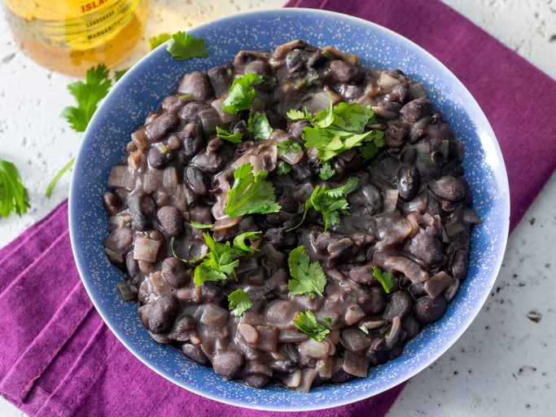

Beans

Description
This is my go-to beans recipe. It works for most any beans and can be modified to add or remove vegetables.
Ingredients
- Beans
- Onion
- Celery
- Carrots
- Salt
Steps
- Rinse and soak beans for at least 4 hours
- Chop and cook vegetables in a pot with some oil over medium heat
- Add beans and bean water (important!) to the pot with cooked vegetables
- Increase heat and boil for 15 minutes
- Reduce heat and simmer until beans are soft, about 2-3 hours
- Once beans are soft, add salt to taste